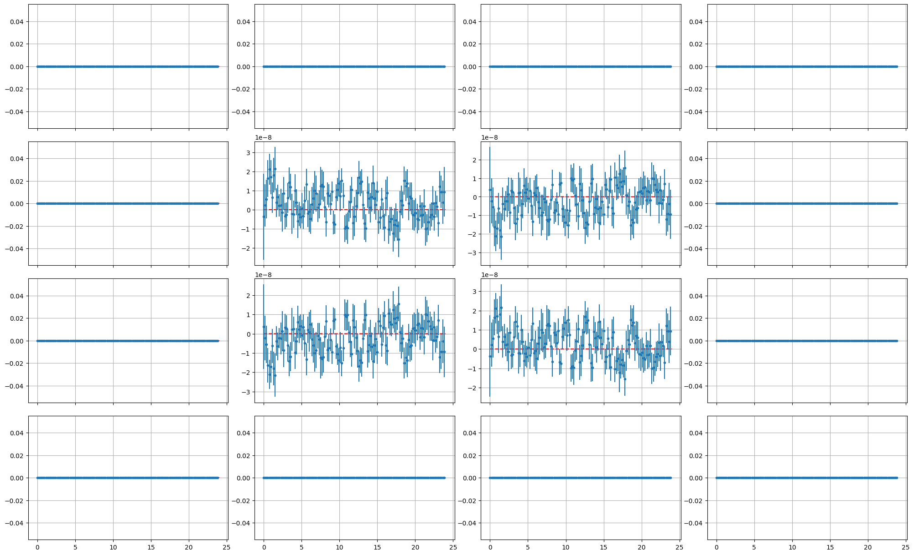
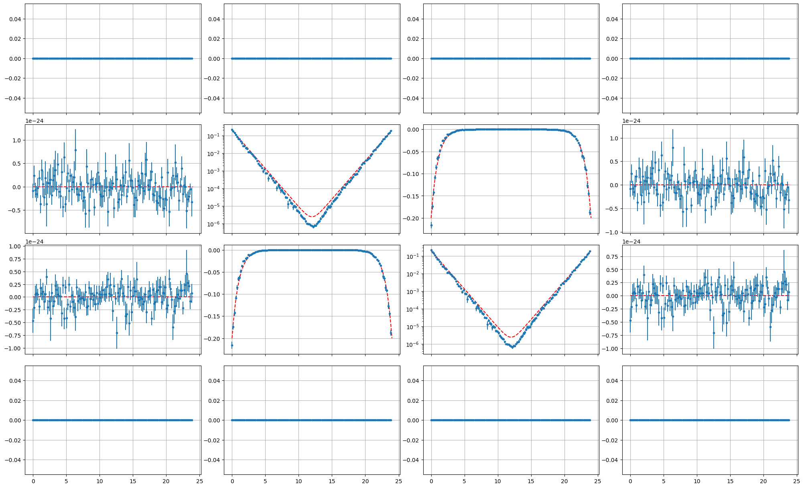
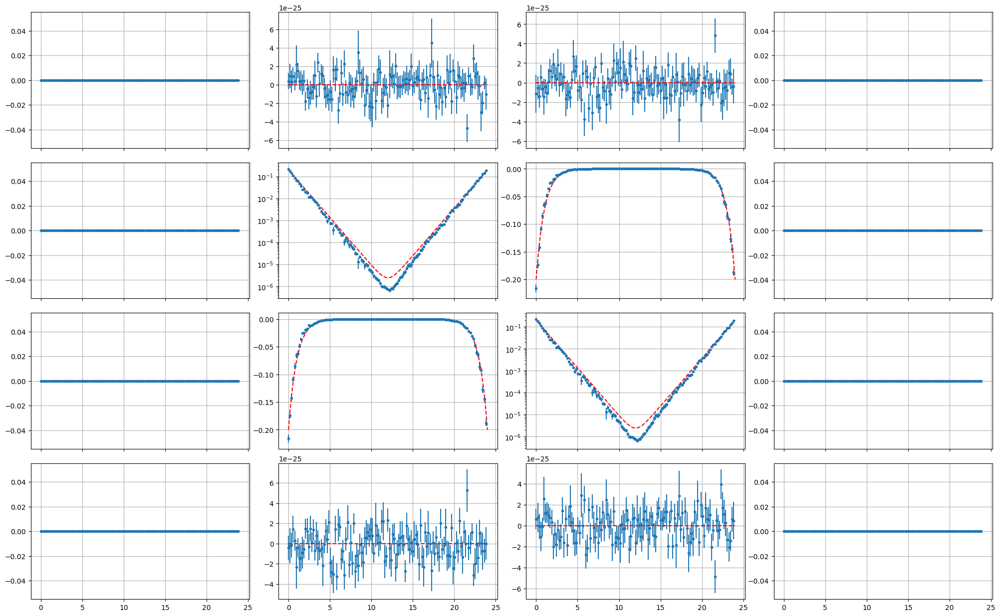
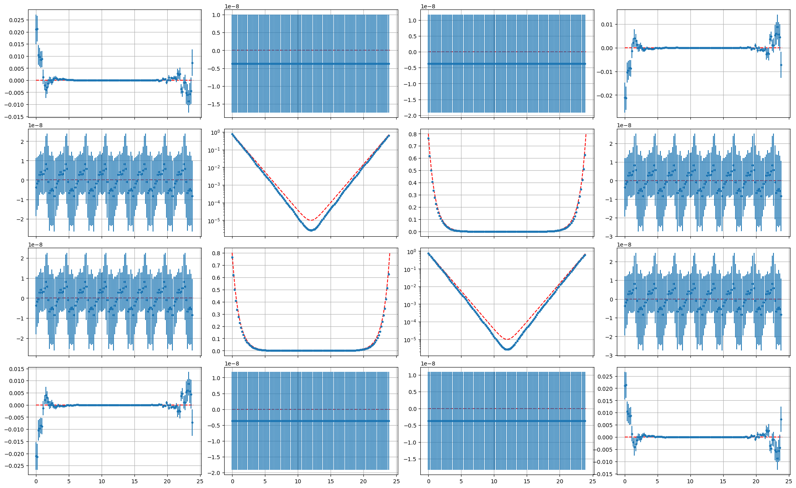
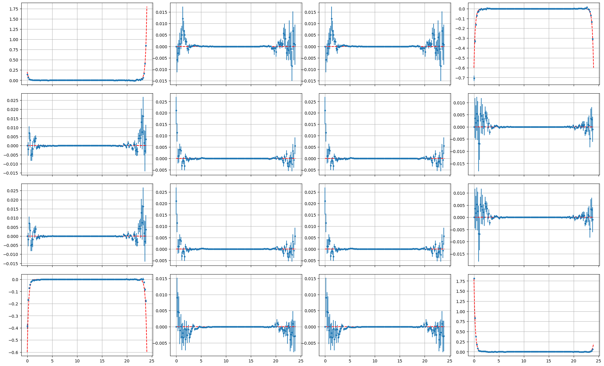
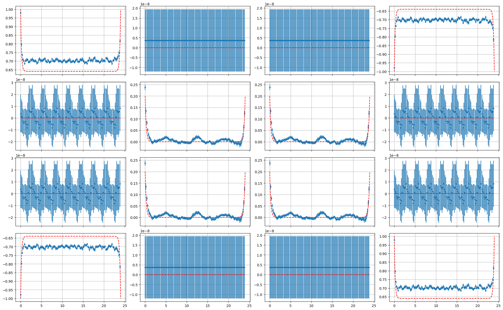
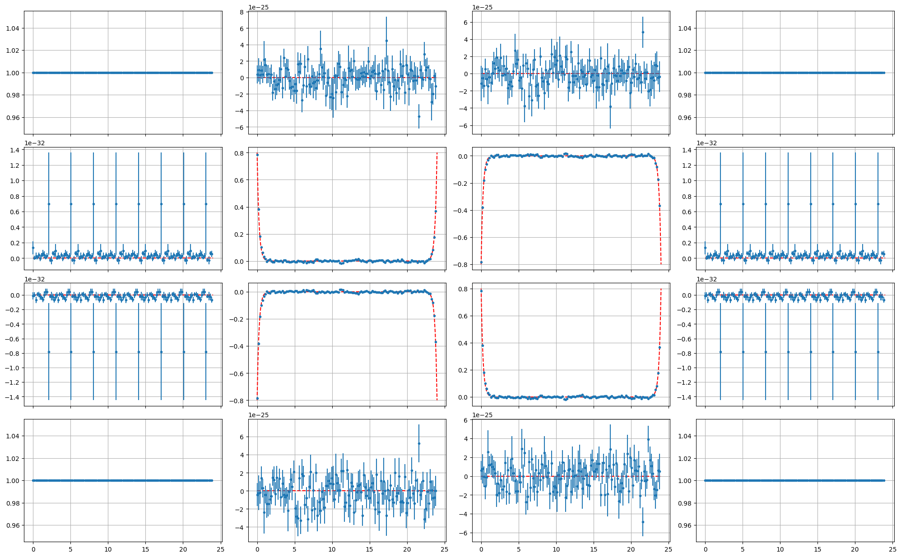

Two-body Contractions and Tests
Preliminaries
I define the single particle propagator as
\[\begin{align} S_{ab}^p&\equiv \langle p_a^{}p_b^\dagger\rangle\\ S_{ab}^h&\equiv \langle h_a^{}h_b^\dagger\rangle \end{align}\]
where \(a,b\) label position (or momentum) as well as time coordinates.
All simulated data are obtained from a 2-site \(\beta=24\) \(U=3\) \(N_t=128\) simulation.
\(I=1,S=1\) Interpolating Operators
| \(I_z {\rm \backslash } S_z\) | \(1\) | \(0\) | \(-1\) |
|---|---|---|---|
| \(1\) | \(p^\dagger_{k}p^\dagger_{l}\) | \(\frac{1}{\sqrt{2}}\left(p^\dagger_{k}h^{}_{l}+h^{}_kp^\dagger_l\right)\) | \(h^{}_{k}h^{}_{l}\) |
| \(0\) | \(\frac{1}{\sqrt{2}}\left(p^\dagger_{k}h^\dagger_{l}+h^\dagger_kp^\dagger_l\right)\) | \(\frac{1}{2}\left(p^{}_kp^\dagger_l+p^\dagger_kp^{}_{l}-h^{}_kh^\dagger_l-h^\dagger_kh^{}_l\right)\) | \(\frac{1}{\sqrt{2}}\left(p^{}_kh^{}_{l}+h^{}_kp^{}_l\right)\) |
| \(-1\) | \(h^\dagger_{k}h^\dagger_{l}\) | \(\frac{1}{\sqrt{2}}\left(p^{}_kh^\dagger_{l}+h^\dagger_kp^{}_l\right)\) | \(p^{}_kp^{}_{l}\) |
\[\begin{equation} \langle\langle O^{}_{\alpha\beta} O^\dagger_{ab}\rangle\rangle_{I_z=1,S_z=1}=S_{\beta a}^{p} S_{\alpha b}^{p}-S_{\alpha a}^{p} S_{\beta b}^{p} \end{equation}\]
\[\begin{equation} \langle\langle O^{}_{\alpha\beta} O^\dagger_{ab}\rangle\rangle_{I_z=0,S_z=1}=\frac{1}{2}\left(-S_{\alpha a}^{p}S_{\beta b}^{h}+S_{\beta a}^{h} S_{\alpha b}^{p}+ S_{\beta a}^{p} S_{\alpha b}^{h}-S_{\alpha a}^{h} S_{\beta b}^{p}\right) \end{equation}\]
\[\begin{equation} \langle\langle O^{}_{\alpha\beta} O^\dagger_{ab}\rangle\rangle_{I_z=1,S_z=0}=\frac{1}{2}\left(S_{\alpha a}^{p} S_{b\beta }^{h}-S_{a\beta }^{h} S_{\alpha b}^{p}-S_{\beta a}^{p} S_{b\alpha }^{h}+S_{a\alpha }^{h} S_{\beta b}^{p}\right) +\frac{1}{2}\left(\delta_{\alpha b}S^p_{\beta a}+\delta_{\beta a}S^p_{\alpha b}-\delta_{\alpha a}S^p_{\beta b} -\delta_{\beta b}S^p_{\alpha a}\right) \end{equation}\]
\[\begin{align} \langle\langle O^{}_{\alpha\beta} O^\dagger_{ab}\rangle\rangle_{I_z=0,S_z=0}&=\frac{1}{4}\left( -S_{ab}^{p} S_{\alpha \beta }^{h}+S_{ab}^{p} S_{\beta \alpha }^{h}+S_{ba}^{p} S_{\alpha \beta }^{h}-S_{ba}^{p} S_{\beta \alpha }^{h}\right.\\ &-S_{ab}^{h} S_{\alpha \beta }^{p}+S_{ba}^{h} S_{\alpha \beta }^{p}+S_{ab}^{h} S_{\beta \alpha }^{p}-S_{ba}^{h} S_{\beta \alpha }^{p}\\ &+S_{\alpha a}^{h} S_{b\beta }^{h}-S_{a\beta }^{h} S_{\alpha b}^{h}+S_{ab}^{h} S_{\alpha \beta }^{h}-S_{ba}^{h} S_{\alpha \beta }^{h}\\ &-S_{\beta a}^{h} S_{b\alpha }^{h}+S_{a\alpha }^{h} S_{\beta b}^{h}-S_{ab}^{h} S_{\beta \alpha }^{h}+S_{ba}^{h} S_{\beta \alpha }^{h}\\ &+S_{\alpha a}^{p} S_{b\beta }^{p}-S_{a\beta }^{p} S_{\alpha b}^{p}+S_{ab}^{p} S_{\alpha \beta }^{p}-S_{ba}^{p} S_{\alpha \beta }^{p}\\ &-\left.S_{\beta a}^{p} S_{b\alpha }^{p}+S_{a\alpha }^{p} S_{\beta b}^{p}-S_{ab}^{p} S_{\beta \alpha }^{p}+S_{ba}^{p} S_{\beta \alpha }^{p} \right)\\ &+\frac{1}{4}\left(\delta_{\alpha b}\left(S^p_{\beta a}+S^h_{\beta a}\right)+\delta_{\beta a}\left(S^p_{\alpha b}+S^h_{\alpha b}\right) -\delta_{\alpha a}\left(S^p_{\beta b}+S^h_{\beta b}\right)-\delta_{\beta b}\left(S^p_{\alpha a}+S^h_{\alpha a}\right)\right) \end{align}\]

\(I=1,I_z=1,S=1,S_z=1\)

\(I=1,I_z=0,S=1,S_z=1\)

\(I=1,I_z=0,S=1,S_z=0\)
\(I=0,S=1\) Interpolating Operators
| \(I_z {\rm \backslash } S_z\) | \(1\) | \(0\) | \(-1\) |
|---|---|---|---|
| \(0\) | \(\frac{1}{\sqrt{2}}\left(p^\dagger_{k}h^\dagger_{l}-h^\dagger_kp^\dagger_l\right)\) | \(\frac{1}{2}\left(p^{}_kp^\dagger_l-p^\dagger_kp^{}_{l}+h^{}_kh^\dagger_l-h^\dagger_kh^{}_l\right)\) | \(\frac{1}{\sqrt{2}}\left(p^{}_kh^{}_{l}-h^{}_kp^{}_l\right)\) |
\[\begin{equation} \langle\langle O^{}_{\alpha\beta} O^\dagger_{ab}\rangle\rangle_{S_z=0}=\frac{1}{2}\left(-S_{\alpha a}^{p}S_{\beta b}^{h}-S_{\beta a}^{h} S_{\alpha b}^{p} -S_{\beta a}^{p} S_{\alpha b}^{h}-S_{\alpha a}^{h} S_{\beta b}^{p}\right) \end{equation}\]
\[\begin{align} \langle\langle O^{}_{\alpha\beta} O^\dagger_{ab}\rangle\rangle_{S_z=0}&=\frac{1}{4}\left( S_{ab}^{p} S_{\alpha \beta }^{h}+S_{ab}^{p} S_{\beta \alpha }^{h}+S_{ba}^{p} S_{\alpha \beta }^{h}+S_{ba}^{p} S_{\beta \alpha }^{h}\right.\\ &+S_{ab}^{h} S_{\alpha \beta }^{p}+S_{ba}^{h} S_{\alpha \beta }^{p}+S_{ab}^{h} S_{\beta \alpha }^{p}+S_{ba}^{h} S_{\beta \alpha }^{p}\\ &-S_{\alpha a}^{h} S_{b\beta }^{h}-S_{a\beta }^{h} S_{\alpha b}^{h}+S_{ab}^{h} S_{\alpha \beta }^{h}+S_{ba}^{h} S_{\alpha \beta }^{h}\\ &-S_{\beta a}^{h} S_{b\alpha }^{h}-S_{a\alpha }^{h} S_{\beta b}^{h}+S_{ab}^{h} S_{\beta \alpha }^{h}+S_{ba}^{h} S_{\beta \alpha }^{h}\\ &-S_{\alpha a}^{p} S_{b\beta }^{p}-S_{a\beta }^{p} S_{\alpha b}^{p}+S_{ab}^{p} S_{\alpha \beta }^{p}+S_{ba}^{p} S_{\alpha \beta }^{p}\\ &-\left.S_{\beta a}^{p} S_{b\alpha }^{p}-S_{a\alpha }^{p} S_{\beta b}^{p}+S_{ab}^{p} S_{\beta \alpha }^{p}+S_{ba}^{p} S_{\beta \alpha }^{p}\right)\\ &+\delta_{\alpha\beta}\delta_{ab}\\ &-\frac{1}{2}\left(\delta_{\alpha\beta}\left(S^p_{ab}+S^h_{ab}+S^p_{ba}+S^h_{ba}\right)+\delta_{ab}\left(S^p_{\alpha\beta}+S^h_{\alpha\beta}+S^p_{\beta\alpha}+S^h_{\beta\alpha}\right)\right)\\ &+\frac{1}{4}\left(\delta_{\alpha b}\left(S^p_{\beta a}+S^h_{\beta a}\right)+\delta_{\beta a}\left(S^p_{\alpha b}+S^h_{\alpha b}\right)+\delta_{\alpha a}\left(S^p_{\beta b}+S^h_{\beta b}\right)+\delta_{\beta b}\left(S^p_{\alpha a}+S^h_{\alpha a}\right)\right) \end{align}\]

\(I=0,I_z=0,S=1,S_z=1\)
\(I=1,S=0\) Interpolating Operators
| \(I_z {\rm \backslash } S_z\) | \(0\) |
|---|---|
| \(1\) | \(\frac{1}{\sqrt{2}}\left(p^\dagger_{k}h^{}_{l}-h^{}_kp^\dagger_l\right)\) |
| \(0\) | \(\frac{1}{2}\left(p^\dagger_kp^{}_l-p^{}_kp^\dagger_{l}+h^{}_kh^\dagger_l-h^\dagger_kh^{}_l\right)\) |
| \(-1\) | \(\frac{1}{\sqrt{2}}\left(p^{}_kh^\dagger_{l}-h^\dagger_kp^{}_l\right)\) |
\[\begin{equation} \langle\langle O^{}_{\alpha\beta} O^\dagger_{ab}\rangle\rangle_{I_z=1}=\frac{1}{2}\left(S_{\alpha a}^{p} S_{b\beta }^{h}+S_{a\beta }^{h} S_{\alpha b}^{p} +S_{\beta a}^{p} S_{b\alpha }^{h}+S_{a\alpha }^{h} S_{\beta b}^{p}\right) -\frac{1}{2}\left(\delta_{\alpha b}S^p_{\beta a}+\delta_{\beta a}S^p_{\alpha b}+\delta_{\alpha a}S^p_{\beta b} +\delta_{\beta b}S^p_{\alpha a}\right) \end{equation}\]
\[\begin{align} \langle\langle O^{}_{\alpha\beta} O^\dagger_{ab}\rangle\rangle_{I_z=0}&=\frac{1}{4}\left( -S_{ab}^{p} S_{\alpha \beta }^{h}-S_{ab}^{p} S_{\beta \alpha }^{h}-S_{ba}^{p} S_{\alpha \beta }^{h}-S_{ba}^{p} S_{\beta \alpha }^{h}\right.\\ &-S_{ab}^{h} S_{\alpha \beta }^{p}-S_{ba}^{h} S_{\alpha \beta }^{p}-S_{ab}^{h} S_{\beta \alpha }^{p}-S_{ba}^{h} S_{\beta \alpha }^{p}\\ &-S_{\alpha a}^{h}S_{b\beta }^{h}-S_{a\beta }^{h} S_{\alpha b}^{h}+S_{ab}^{h} S_{\alpha \beta }^{h}+S_{ba}^{h} S_{\alpha \beta }^{h}\\ &-S_{\beta a}^{h} S_{b\alpha }^{h}-S_{a\alpha }^{h} S_{\beta b}^{h}+S_{ab}^{h} S_{\beta \alpha }^{h}+S_{ba}^{h} S_{\beta \alpha }^{h}\\ &-S_{\alpha a}^{p} S_{b\beta }^{p}-S_{a\beta }^{p} S_{\alpha b}^{p}+S_{ab}^{p} S_{\alpha \beta }^{p}+S_{ba}^{p} S_{\alpha \beta }^{p}\\ &-\left.S_{\beta a}^{p} S_{b\alpha }^{p}-S_{a\alpha }^{p} S_{\beta b}^{p}+S_{ab}^{p} S_{\beta \alpha }^{p}+S_{ba}^{p} S_{\beta \alpha }^{p}\right)\\ &+\frac{1}{4}\left(\delta_{\alpha b}\left(S^p_{\beta a}+S^h_{\beta a}\right)+\delta_{\beta a}\left(S^p_{\alpha b}+S^h_{\alpha b}\right)+\delta_{\alpha a}\left(S^p_{\beta b}+S^h_{\beta b}\right)+\delta_{\beta b}\left(S^p_{\alpha a}+S^h_{\alpha a}\right)\right) \end{align}\]

\(I=1,I_z=1,S=0,S_z=0\)

\(I=1,I_z=0,S=0,S_z=0\)
\(I=0,S=0\) Interpolating Operator
| \(I_z {\rm \backslash } S_z\) | \(0\) |
|---|---|
| \(0\) | \(\frac{1}{2}\left(p^\dagger_kp^{}_l+p^{}_kp^\dagger_{l}+h^{}_kh^\dagger_l+h^\dagger_kh^{}_l\right)\) |
\[\begin{align} \langle\langle O^{}_{\alpha\beta}O^\dagger_{ab}\rangle\rangle&=\frac{1}{4}\left( S_{ab}^{p} S_{\alpha \beta }^{h}-S_{ab}^{p} S_{\beta \alpha }^{h}-S_{ba}^{p} S_{\alpha \beta }^{h}+S_{ba}^{p} S_{\beta \alpha }^{h}\right.\\ &+S_{ab}^{h} S_{\alpha \beta }^{p}-S_{ba}^{h} S_{\alpha \beta }^{p}-S_{ab}^{h} S_{\beta \alpha }^{p}+S_{ba}^{h} S_{\beta \alpha }^{p}\\ &+S_{\alpha a}^{h} S_{b\beta }^{h}-S_{a\beta }^{h} S_{\alpha b}^{h}+S_{ab}^{h} S_{\alpha \beta }^{h}-S_{ba}^{h} S_{\alpha \beta }^{h}\\ &-S_{\beta a}^{h} S_{b\alpha }^{h}+S_{a\alpha }^{h} S_{\beta b}^{h}-S_{ab}^{h} S_{\beta \alpha }^{h}+S_{ba}^{h} S_{\beta \alpha }^{h}\\ &+S_{\alpha a}^{p} S_{b\beta }^{p}-S_{a\beta }^{p} S_{\alpha b}^{p}+S_{ab}^{p} S_{\alpha \beta }^{p}-S_{ba}^{p} S_{\alpha \beta }^{p}\\ &-\left.S_{\beta a}^{p} S_{b\alpha }^{p}+S_{a\alpha }^{p} S_{\beta b}^{p}-S_{ab}^{p} S_{\beta \alpha }^{p}+S_{ba}^{p} S_{\beta \alpha }^{p}\right)\\ &+\delta_{\alpha\beta}\delta_{ab}\\ &+\frac{1}{2}\left(\delta_{\alpha\beta}\left(S^p_{ab}+S^h_{ab}-S^p_{ba}-S^h_{ba}\right)+\delta_{ab}\left(S^p_{\alpha\beta}+S^h_{\alpha\beta}-S^p_{\beta\alpha}-S^h_{\beta\alpha}\right)\right)\\ &+\frac{1}{4}\left(\delta_{\alpha b}\left(S^p_{\beta a}+S^h_{\beta a}\right)+\delta_{\beta a}\left(S^p_{\alpha b}+S^h_{\alpha b}\right)-\delta_{\alpha a}\left(S^p_{\beta b}+S^h_{\beta b}\right)-\delta_{\beta b}\left(S^p_{\alpha a}+S^h_{\alpha a}\right)\right) \end{align}\]

\(I=0,I_z=0,S=0,S_z=0\)